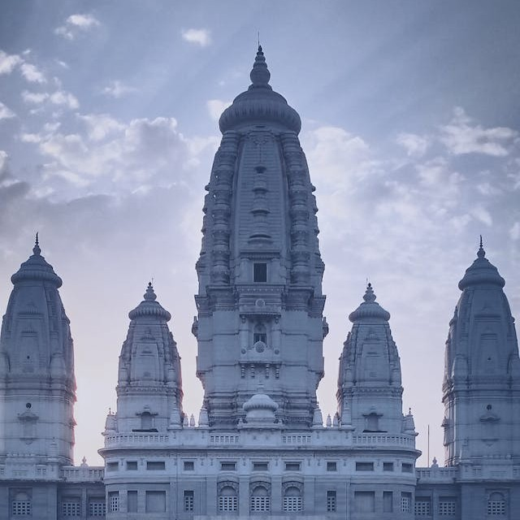
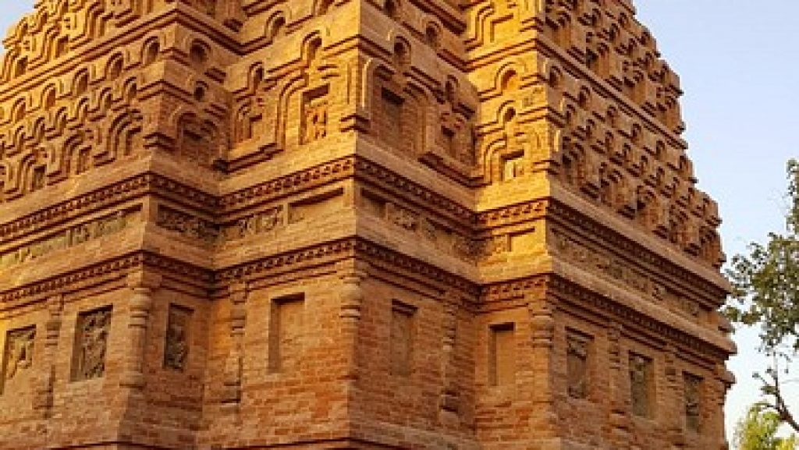
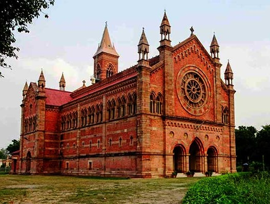

JK temple
Shri Radhakrishna Temple, also known as J.K. Temple, is a major landmark in Kanpur and a must-see for visitors. Its grand steeple is a prominent feature of the skyline, attracting devotees from around the world over its sixty four-year history. The temple's regal appearance and serene, picturesque setting create a peaceful atmosphere amidst the bustling city. Situated on seventeen acres of lush greenery, the temple's design, including its five steeples representing five shrines, enhances its celestial and timeless charm. The five shrines that are housed in the Temple dedicated to Shri Radhakrishnaji, Shri Narmadeshwarji, Shri Ardhanarishwarji, Shri Lakshminarayanji and Shri Hanuman ji. The temple also houses an ancient copy of the Vedas, adding to its spiritual significance.

Bheetar Gaon Jaggannath temple
The Bhitargaon Temple is a terraced brick building fronted with a terracotta panel. Built in the 6th century during the Gupta Empire, it is the oldest remaining terracotta Hindu shrine with a roof and a high Sikhara, though its upper chamber did sustain some damage in the 18th century.
The temple is built on a square plan with double-recessed corners and faces east. There tall pyramidal spire over the garbhagriha. The walls are decorated with terracotta panels depicting aquatic monsters, Shiva and Vishnu etc. When Cunningham first visited the site, the remains of the porch and of the ardhamandapa were still visible, which later collapsed.

Sudhanshu Ji Maharaj Ashram
Sudhanshu ji Maharaj Ashram located in Bithur is run by Vishwa Jagriti Mission. The ashram has a vast campus and has an artificial Kailash mountain and Radha Krishma temple located on the premises. The ashram with Vishwa Jagriti Mission (VJM) is involved in the charitable activities. The Kanpur ashram has established Hospitals for poor and needy people. Here thousands of underprivileged people get free allopathic treatment here.
As per Hindu mythology, Bithur district is believed to be the birth place of Luv and Kush, who were the sons of Lord Rama. Also it is said that lord Vishnu and Brahma choose Bithur place to reconstruct the universe, hence this place is also called as Brahmavart. Bithur is also the birth place of Rani Laxmibai.

kanpur memorial church
Kanpur Memorrial Church is situated in the calm environs of the cantonment area. Also famous as All Souls Cathedral, this church was constructed in the year 1875 to pay respect to the British lives that were lost in the1857 movement. It was designed by an architect Walter Granville, the church exhibits Lombardic Gothic architecture. There is a huge garden in the the eastern section of the church. In the middle of the church you will see a marvellously carved figurine of an angel created by Baron Carlo Marochetti. The angel holds sign of peace in her crossed arms, which is a divine sight.